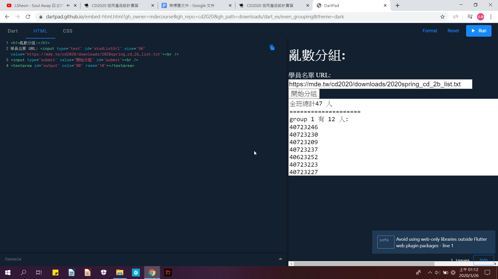

Weeks <<
Previous Next >> About
week1~5
Week1
建立個人倉儲及編輯網站
1.登入自己的github帳號，創建新的倉儲cd2020
2.輸入git clone https://github.com/s40723218/cd2020 複製個人倉儲至資料夾
3.輸入git submodule add https://github.com/mdecourse/cmsimde.git 取得子模組資料。
4.將up_dir的所有項目複製到cd2020裡面
5.完成後，python wsgi.py 開始編輯個人網站
6.編輯完成後即可git status > git add . > git commit -m " " > git push
Week2
將可攜系統的 python3.7.3更新至 python3.8.2 版本
1.在cd2020裡面新增一個data資料夾，然後在data裡面新增資料夾py382及wscite432、portablegit。
2..進入Python官網。點Downloads下的Windows，並選Latest Python 3 Release - Python 3.8.2。
3.下載Windows x86-64 executable installer。
4.把pip選項取消，接著案next到py382
5.下載SciTE系統 full 64-bit download，下載完後解壓縮至data下的wscite432
6.建立新的start.bat及stop.bat。
7.下載MSYS2 msys2-x86_64-20190524.exe 至data下。
8.下載PortableGit 64-bit Git for Windows Portable 至portablegit下。
9.安裝到https://bootstrap.pypa.io/get-pip.py頁面，另存新檔到data下。
10開啟start.bat 輸入指令python get-pip.py以及pip install flask bs4 lxml pelican markdown flask_cors leo 就完成了
Week3
請描述如何針對該課程進行有效的隨機分組，或者隨機進行點名？
1.去網站 http://mde.tw/cd2020/content/Grouping.html
2.點 Dart source code for random grouping
3.去HTML更改為我們班的路徑
4.點Run即完成亂數分組.
完成圖

操作影片
Weeks <<
Previous Next >> About